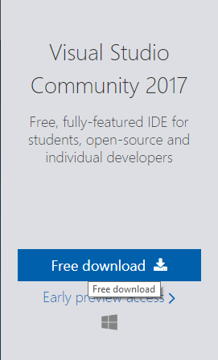
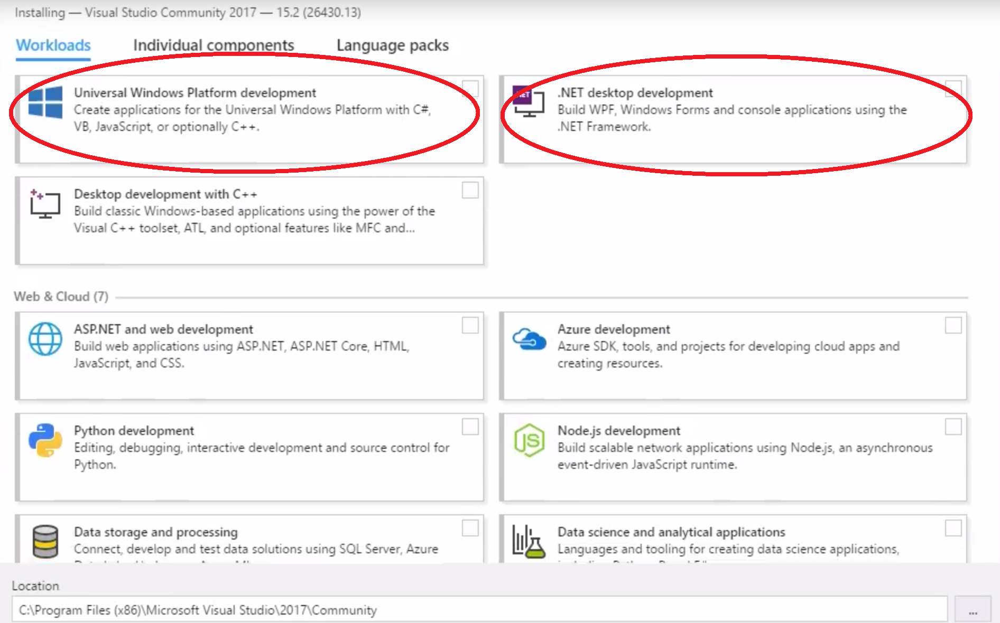
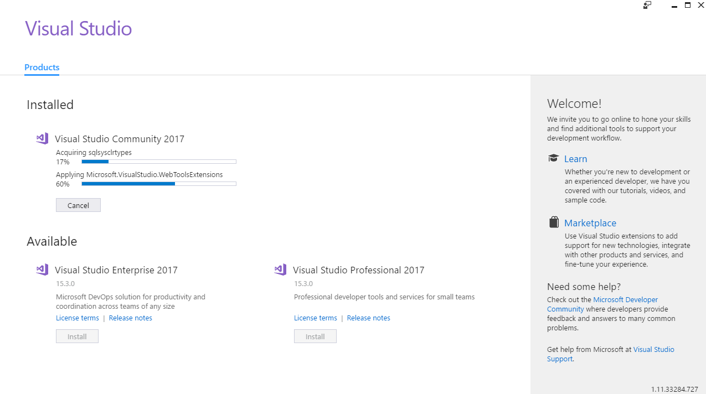
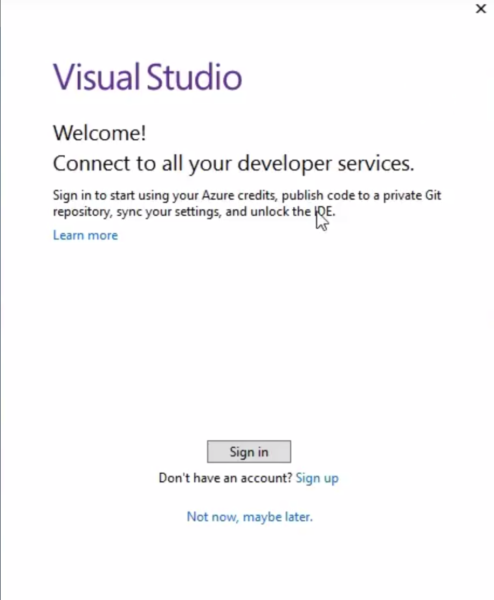
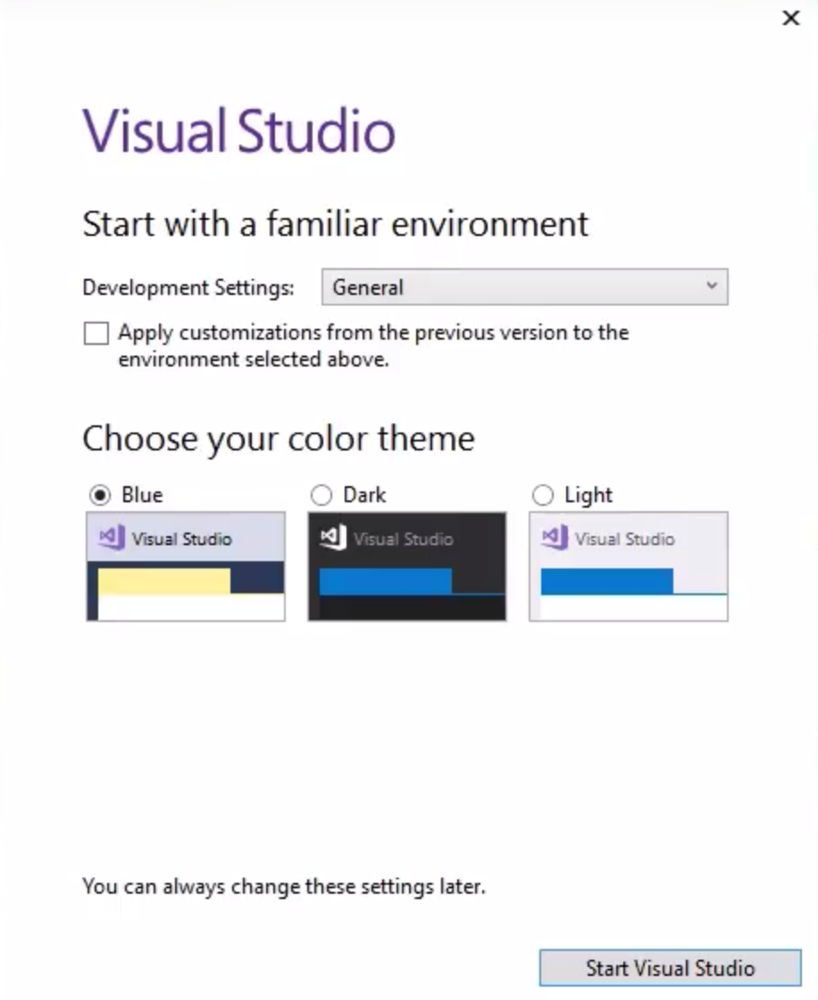
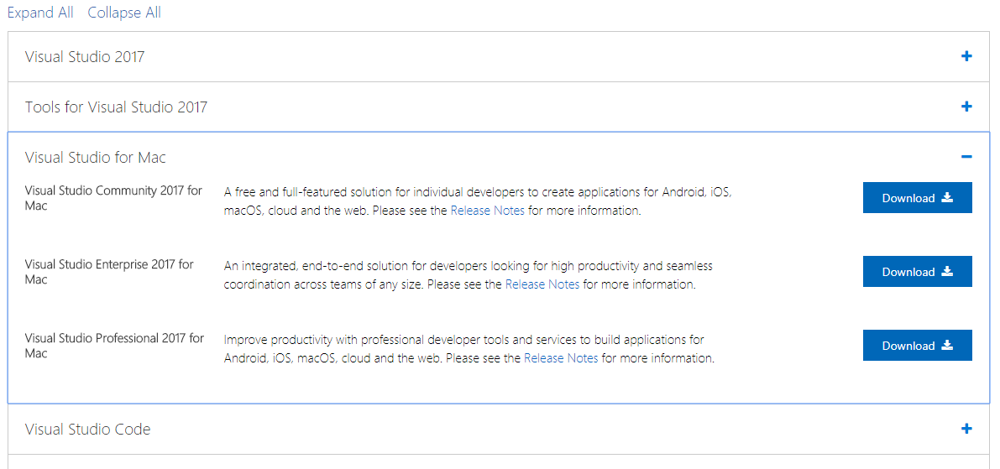
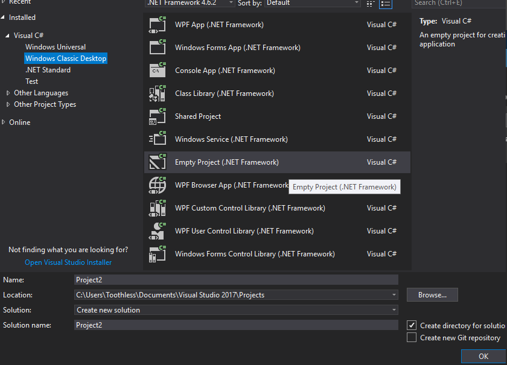
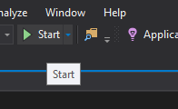
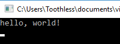

C# Programming Tutorial: Introduction - #1 - Getting Started
This first section, Introduction, will focus on essential elements of the language, skipping out a lot of the rules, details, and exceptions in the language, this will come in the next section of the tutorial.
Let’s get started by installing C# and an IDE for editing the code. (If you have already installed Microsoft Visual Studio you can safely skip this part).
First, we will need to download Microsoft Visual Studio here is a link direct to the download page: Visual Studio Download Page.
Download the community edition as the paid editions offer some extra fetures that we will not use. Or if you are on Linux you can install Visual Studio Code.
Windows Installation Help
Once you have downloaded the Visual Studio installer from the link above click this button:

You should then open it and click next/continue untill you get to this screen:

Where you should click the two circled options and any other options you would like. You can close an install location then click install.
Visual Studio will then install and download.

Once downloaded and installed click launch and you will be asked to sign in with a Microsoft account

If you dont have one make one and sing in.
You will them be presented with some options all you should change on this screen is the theme setting. Personaly I prefer dark you you can chose any, this can be changed later.

After that Visual Studio will launch and you are ready to go.
Mac Installation Help
Go to the download page an scroll down untill you get to here:

Click the Community edition download then follow the Windows intallation intructions.
Linux Installation Help
Your using Linux, you know how to install programs.
Now that visual Studio is installed and open lets create a new empty project by clicking file and new in the top right and selecting the empty project type.

Give it a name and save it to a location that you desire.
Then click "ok" and the project will open.
Press CTRL+SHIFT+A to create a new class, called Class1 so delete all of the text within.
Great so we have made a new file that could run some code but what now?
Well so far in te tutorial we havent actually wrote any code, but the only way to learn how to program is by actually writeing code so lets do that. Staring off by following tradition our first program will printing the words:
hello, world!
This is the first big hurdle; to reach over it you must be able to create a program that write text to somewhere, compile it, load it into memory, run it, then find where your output went to.
In C# crafting the hello, world program is quite simple and the program is shown below:
using System;
class Class1
{
static void Main()
{
Console.Write("hello, world!\n");
Console.ReadLine());
}
}
Running the program is also very simple a we are using Visual Studio all you must do is press the F5 key or the start button at the top of the window.

A console window will then open and display your message to the world!

Now for some explanation of the program. A C# program whatever its size is made up of a class, methods, and variables.
A class contains methods and variables, a method contains statements that specify what the program does and are surrounded by {} (most of the time), and finally the variables store information for the program to use whilst it is running.
The method in our program is called Main, normally you are at liberty to name your methods however somewhere in your C# program you must have this function as it is what the compiler looks for to start your program, so every program you write must have a Main function if it is intended to run (things like libraries do not need a main function but this is something we will talk about later). As C# is also a case sensitive language it must also start with an uppercase M.
Main will call on other function to help the program do its job, some that you write and others that you will not have written from something like a library (or stack overflow) that are provided for you. The first line of the program,
using System;
tells the compiler to include the System library. This contains information on how to talk to the CMD and some other functions and as a result this line appears at the top of many C# source files, this library may be talked about more in-depth when discussing the core framework of C# later in the tutorial. Every line of code in a C# file must also end with a ";", this symbol acts the same as a full stop does in the english language, it tell the compiller that this is the end of this statement, or the english equivelent would be a sentance, and that this statement if finished and should move onto the next line.
Missing out this small but important charater is somethign beginners and experts alike sometimes forget to add and can lead to hours of debugging so just remember to check after yo have finished a line to add the ";".
One method of passing data between methods is the calling method giving the called method data in a list of values, called arguments. The parenthesis () after a method name is where the arguments go. In this example Main is defined to be a method that expects no arguments which is indicated by the empty list. The void keyword that precedes the main method means that nothing will be returned from it and the static keyword means that it cannot be instanced, keywords are somethign we are going to discuss next time but for now just know that blue words are keywords.
The statements of a method are enclosed in curly braces {}, our Main method only has 2 statements:
Console.Write("hello, world!\n");
Console.ReadLine());
A method is called by naming it, and if it is a function from another class the class name must also precede it. So, the statement calls the method Write with the argument “hello, world\n” form the Console class. Write is a library function contained in System that prints out a string of character to the console.
The second statement keeps the console window open after “hello, world” has been output so ignore it for now.
using System; tells C# we need the System library
class Class1 makes a new class called Class1
{ methods and variables of Class1 are enclosed in curly braces
static void Main() defines the function Main that recives no argument values
{ statements of Main are enclosed in curly braces
Console.Write("hello, world!\n"); Main calls 2 libary functions, Write() which prints the sequence of
characters; \n represents a newline character
Console.ReadLine()); the second function keeps the console open by makeing it wait for a
key input
}
}
A sequence of characters in double quotes, like “hello, world\n”, is called a character string or string constant. For the moment, our only use of character strings will be as arguments to output to the console, and a few other methods again as arguments.
The sequence \n in the string is the C# notation of a newline character this is a special character that tell the computer to put a bit of text onto a new line, effectively it is a representation of pressing the enter key. If you leave out the \n (a worthy experiment), you will find that there your cursor will not advance to the next line after the output is printed. You must use a \n at the end of the string to move down a line with the Write() mathod, however you can use the WriteLine() function which will insert a \n automatically to the end of the output.
As Write() never supplies a \n automatically our program could have been written as shown below:
static void Main()
{
Console.Write("hello,");
Console.Write("world");
Console.Write("\n");
Console.ReadLine());
}
As this would produce an identical result since the Write function does not supply \n automatically. Notice that \n only counts a single character and provides a convenient method to write hard to type or invisible characters. Among other that C# provides are \t for tab, \b to backspace, \" for double quote, and \\ for backslash itself.
Now before we end here are some exercises for you to try before the next tutorial, the exercises are listed below with the answers shown if expanded.
Exercise 1: Experiment what happened when you try different letters after the \c, where c is not a character already described above, to see what result you get. Also try placing the \c in difference locations to see what effect it has
- \a : Alert (Bell) Character
- \b : Backspace
- \f : Form Feed
- \n : Newline
- \r : Carriage Return
- \t : Horizontal Tab
- \v : Vertical Quote
- \\ : Backslash
- \' : Single Quote
- \" : Double Quote
- \uxxxx : Unicode escape sequence for character with hex value xxxx
- \xn [n][n][n] : Unicode escape sequence for character with hax value nnn (veriable length version of \uxxxx)
- \Uxxxxxxxx : Unicode escape sequence for character with hex value xxxxxxxx (for generating surrogates)
- \0 : Unicode character 0, Null value character
Exercise 2: Run “hello, world” program on your system. Experiment with leaving out parts of the program and try to understand the error message given
Removeing a ;
Error: ; expected
The compiler expects a ';' somewhere in your code
Removeing Console.
Error: The name '<method name>' does not exist in the current context
This means that there is not a method called '<method name>' in our class.
Removeing static
Error: Program does not contain a static 'Main' method sutiable for an entry point
Main() method must be static or the program could have multiple so the compiler would not know where to start the program from
Removeing the class keyword
Error: A namespace cannot directly contain members such as fields or methods
Methods and variables mush be contained within a class
Error: type or namesace definition, or end-of-file expected
As Class1 is no longer a type {} shouldn't be their so it shouts at you
Removeing the void keyword
Error: Method must have a return type
All methods must tell the compiler if they are going to return something after they have run, void means nothing will be returned
Removeing the using keyword
Error: A namespace cannot directly contain members such as fields or methods
Error: Type or namespace, or end-of-file expected
See: Removeing the class keyword
Error: The name 'Console' does not exist in the current context
This means that their is no class named 'Console' on our project, this is because we are importing that class from the System library
That is, it for the first tutorial next time we will look at variables, arithmetic operators, and keywords to and create a Fahrenheit to Celsius convertor. Hope you enjoyed, and see you next time.
Back To Collection | Previous | Next